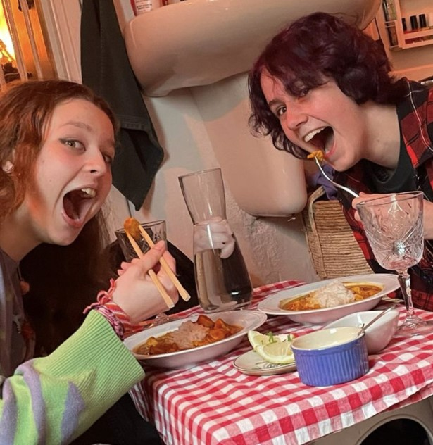
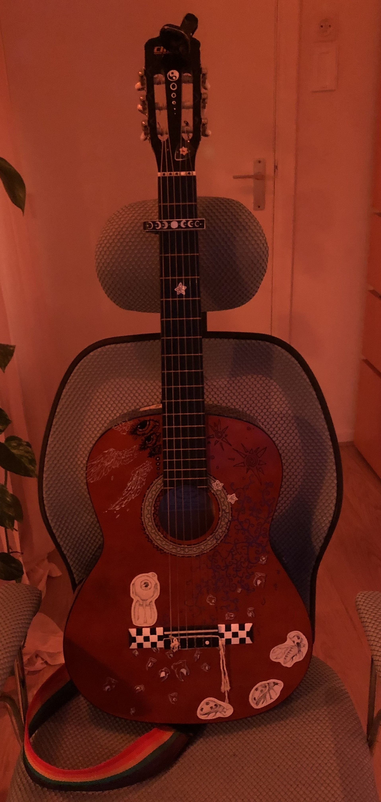

Sterre Romeijn
Sterre
Romeijn
Hi my name is Sterre, I am 16 years old and I am going to tell you some stuff about my love for coding and this project, here it goes!
My code journey began 2 years ago, a few months before april.
After my interest for nerdy things like building my own pc and keeping watch over the stats grew,
my uncle introduced me to coding in the form of right click, inspect element.
I was flabbergasted and I messed around with that for a week or so until he said to me that I can
make that myself. So he downloaded VScode for me and I went straight to work. First I pasted a file
from magister so I could make changes that actually stayed. Then I made my very first project.
I messed around with that some more before I went on an internship at my uncles.
I learned so much in those two weeks. My interest in coding only grew. Fast forward a year or so.
I spent my time doing it as a hobby during the breaks or after school.
Then another opportunity for an internship at my uncles, cool! I really wanted to challenge myself.
I designed and made another big website in two weeks.
And ever since I’ve known that I would want to do something with it.
And now I am here and I can't wait to learn more! In this website I show you some of my hobbies, projects
and interests. On this page I have a little slideshow with some pictures I took. Below are two of my main
projects! I’ve also made a digital sketchbook with drawings, animations and other little projects. And I have
a picture of my guitar because it is one of my prized possessions (and I wanted to show off how cool it is :D)



.png)
.png)